12 Aug 2026
The slate landed
Eleven tonnes from Ffestiniog, stacked in the yard for a fortnight while the roofers finish the west pitch. It is a colder grey than the sample, which we prefer and did not plan.
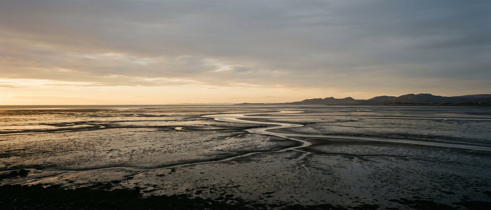
Opening May 2027 · the list is open
A stone house on the Dyfi, with 600m of tidal sand at the door. Nothing is finished and nothing is bookable. This is the list.
You are on the list
Check your inbox — there is one email there asking you to confirm, and nothing else happens until you do.
You are number 1,205.
1,204 ahead of you · 7 of 11 rooms plastered · 40 invitations in the first season
Sleeps 25 across 11 rooms. No clock on this page — the date moves, and a countdown to a date that moves is a promise we would rather not make.

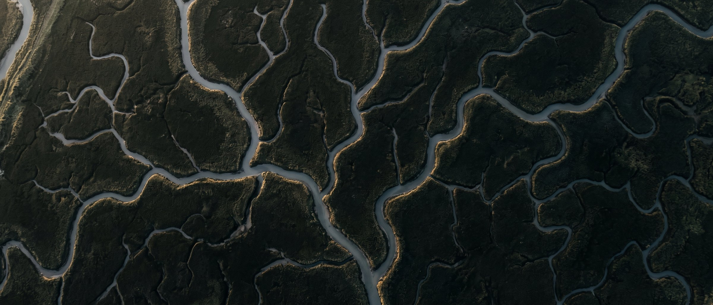
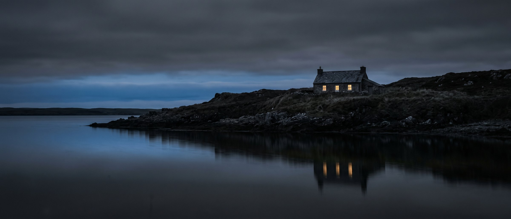
The tide
It comes in across four miles of sand faster than you walk.
4.1m spring range
Low water
Six hours later it is a plain, and you can walk to the channel.
600m of sand to the channel
The saltings
Behind the dune the marsh drains in creeks that move every winter.
9m the channel moved since 2019
After dark
There is no other light on this side of the water.
May 2027 when the lights are ours

The board
Five samples went to the joiner in March. Every colour on this site is one of them measured, so the swatch and the plate cannot disagree.
At working distance
The board is the specification. This is the specification at the scale you would put a hand on.
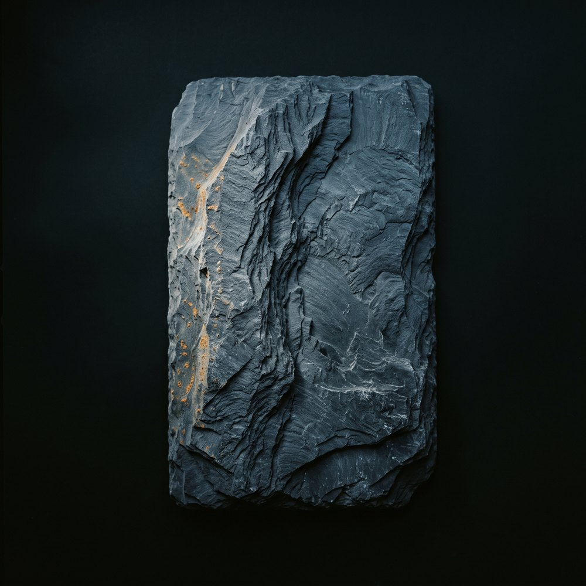
Roof and the four window sills that take weather.
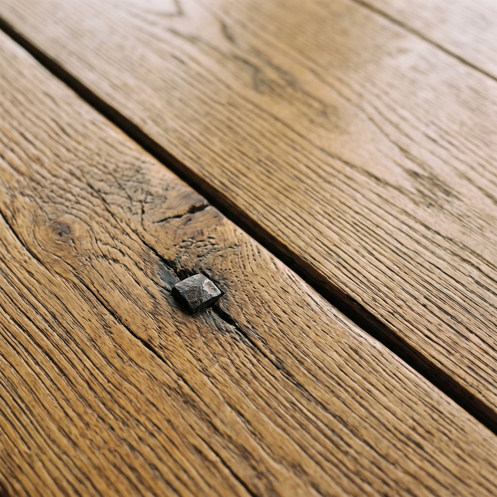
Floors throughout, and the long table.
Blankets and the stair runner. Undyed.
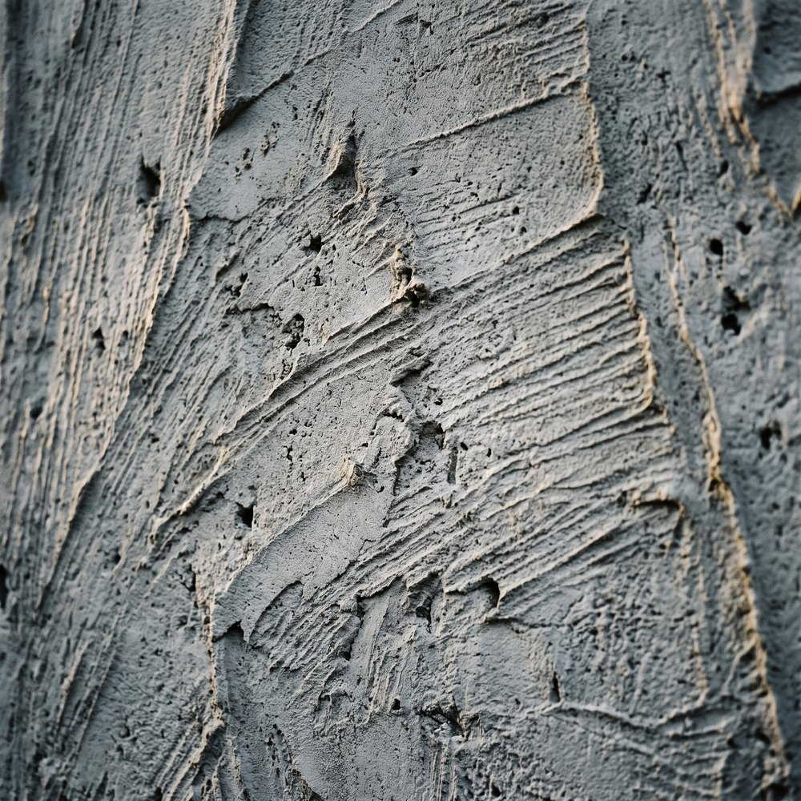
Every wall. It moves with the building instead of cracking.
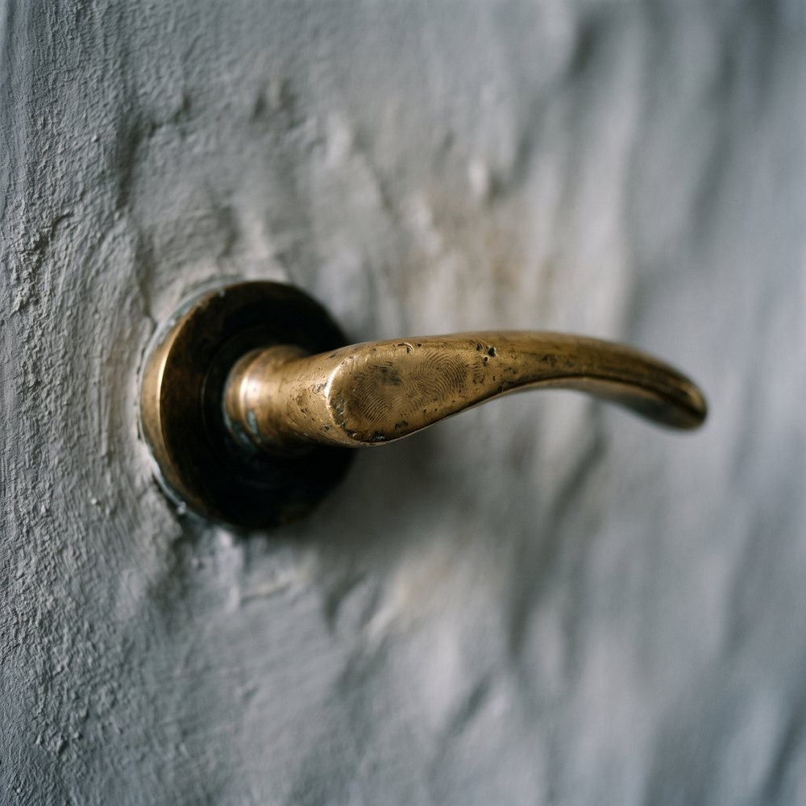
Handles, hooks, and the eleven room tags.
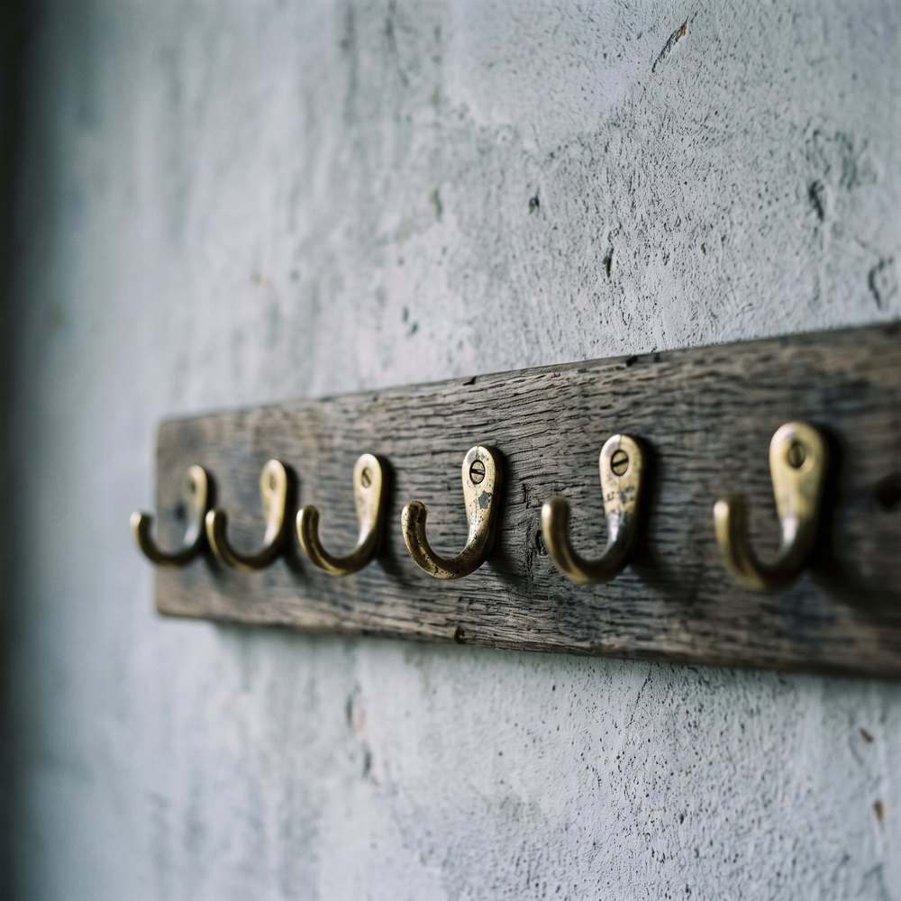
Screwed to the board in June. The tags are cast and lying in a drawer.

The rooms
Every room has a name, a gable and a stage it has got to. 3 of the 11 are spoken for by the people who funded the roof.
Marked rooms are wave one — furnished and released first.
Four stages
7 of the 11 are past the second of these. Three are past the last.
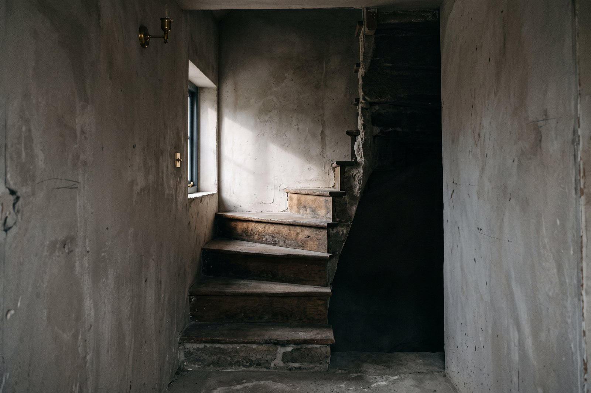
The stair, which is the whole problem
This is why there is no lift and why the access statement says what it says. The core is the building; taking it out is not something the building survives.
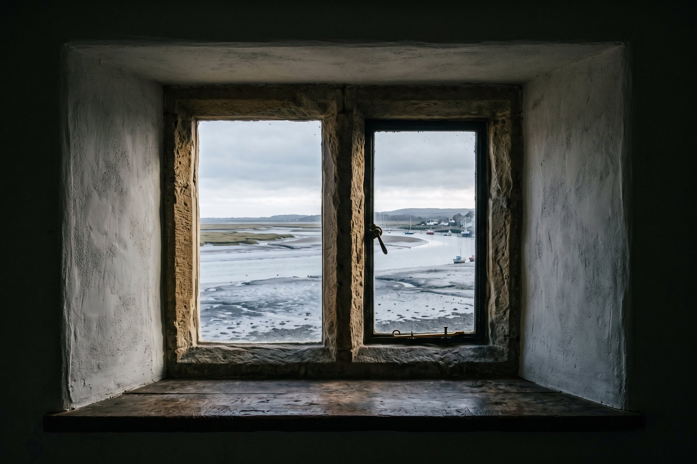
Plastered, and nothing else yet
Three coats of lime and a week between each. The window was there before we were; the sill is the one piece of oak in the house we did not buy.
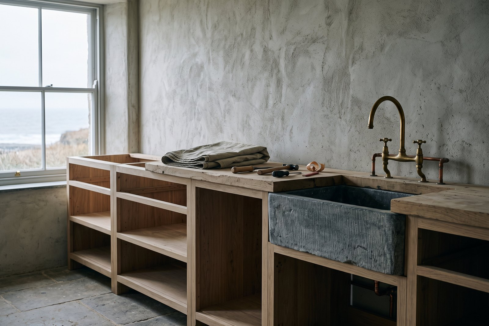
Fitted: the run, no doors
Eleven feet, one run, no island — the room is eleven feet wide and an island would be a wall. Commissioned in June from a workshop in Machynlleth.
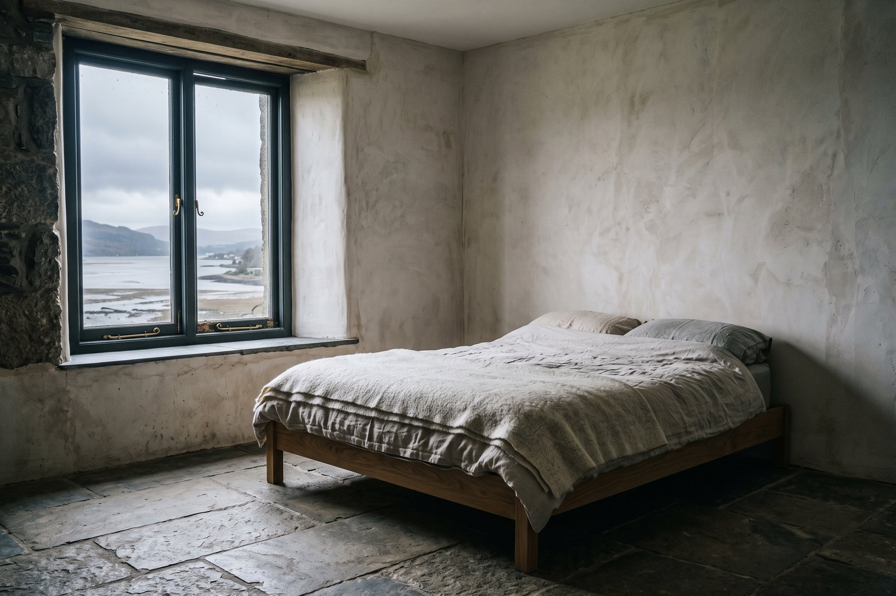
Furnished, which means finished
A bed, a blanket, a window and a floor. If it looks like something is missing, nothing is — this is the whole specification.
The build log
Four entries in twelve months, which is the real rate. We would rather write nothing than write something.
12 Aug 2026
Eleven tonnes from Ffestiniog, stacked in the yard for a fortnight while the roofers finish the west pitch. It is a colder grey than the sample, which we prefer and did not plan.

30 Jul 2026
Lime, three coats, and each one needs a week between them, which is why this took the whole summer and why the last four are next spring's problem.
The sequence
A waitlist lives in the inbox, not on the page. These are real table-based documents with a plain-text part, built from the same tokens.
Email 01
Somebody put this address on the list for Marram. If that was you, confirm it below and we will stop bothering you until there is something true to say.
If it wasn't you, ignore this. Nothing happens, and the address is deleted in seven days.
Confirm this address
Immediately
Email 02
1,204
your place in the queue
The first season goes out as 40 invitations in two waves — February and April. Everyone here gets forty-eight hours before the public each time.
What the waves mean
Straight after confirming
Email 03

We are not advertising this and we are not going to. The list has grown by people telling one other person, which is the rate we can actually build for.
Copy the link
About a fortnight later